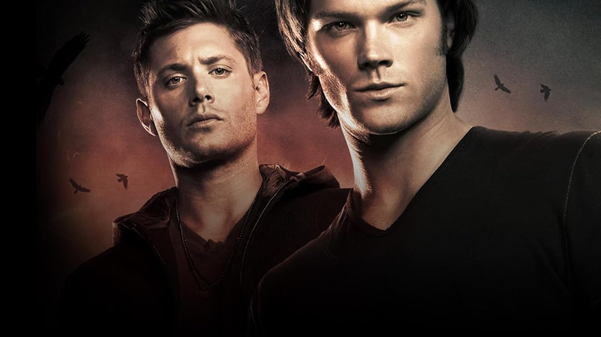

Supernatural
Uma série lendária com 15 temporadas

Sinopse
Supernatural é uma série sobre os irmãos Sam e Dean Winchester, que viajam pelos Estados Unidos caçando criaturas sobrenaturais, como fantasmas, demónios e vampiros, e investigando eventos paranormais. Guiados pelo diário de seu pai, eles continuam o "negócio da família" após o assassinato de sua mãe e da namorada de Sam, enfrentando diversas ameaças e desvendando segredos sobre o mundo sobrenatural.
Ao longo das temporadas, a trama evolui de casos isolados para conflitos épicos envolvendo anjos, demônios, o inferno, o céu e até o próprio destino da humanidade. Sam e Dean enfrentam perdas, ressurreições, profecias, o Apocalipse e descobrem segredos antigos sobre sua linhagem e o papel que desempenham no equilíbrio entre o bem e o mal.
Com um tom sombrio, momentos de humor e fortes laços familiares, Supernatural se tornou uma das séries mais icônicas da TV, e um classico da TV brasileira, transmitida por muitos anos pelo SBT com 15 temporadas exibidas entre 2005 e 2020.
O Chevy Impala 67
"O Impala, é claro, tem tudo que os outros carros têm. E algumas coisas que eles não têm. Mas nada disso importa. Isso é o que importa. O soldadinho que Sam enfiou no cinzeiro ainda está preso lá. Os Legos que Dean colocou nas saídas de ar estão lá até hoje, quando o aquecedor liga, dá pra ouvi-los chacoalhar. Essas são as coisas que fazem o carro ser deles realmente deles. Mesmo quando Dean o reconstruiu do zero, ele fez questão de manter todas essas coisinhas. Porque são as imperfeições que o tornam único. O Diabo não sabe, nem se importa com que tipo de carro os garotos dirigem. Mas deveria".
Chuck
O Impala 1967 em Supernatural representa muito mais do que um carro. Ele é um símbolo emocional, narrativo e espiritual da série — praticamente um personagem por si só. É onde se toma decisões, onde se cura o luto, onde se celebra a vitória, onde se descansa — é o lar sobre rodas. É também a lembrança de que, no meio do apocalipse, o que realmente importa são os laços humanos, a história compartilhada e o amor incondicional entre irmãos.
7 Motivos para assistir supernatural:
- Tramas épicas e mitologia crescente
- Quimica entre os protagonistas
- Personagens secundarios épicos: Castiel, Crowley e Bobby são exemplos
- Trilha sonora baseado em rock anos 70 e 80
- É viciante
- Humor inesperado e genial
- Episódios criativos com referencia a cultura pop
Mais informações
Você pode conhecer mais sobre Supernatural clicando aqui